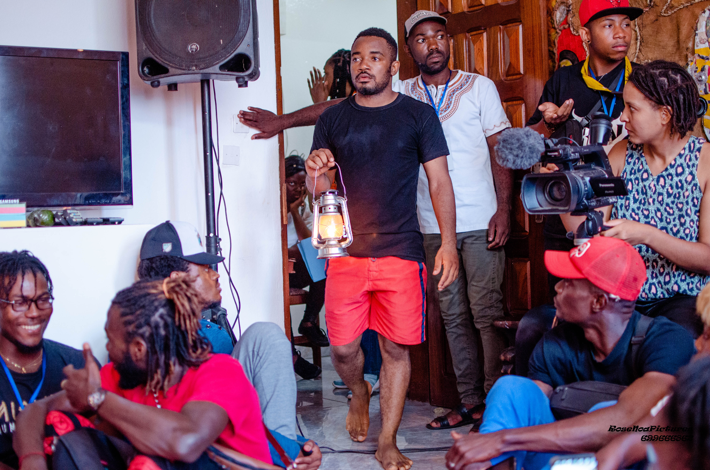
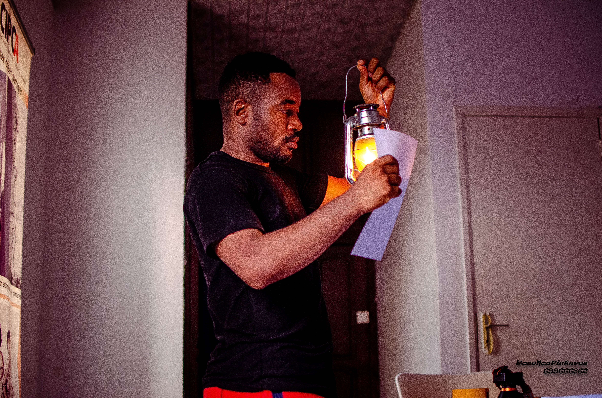
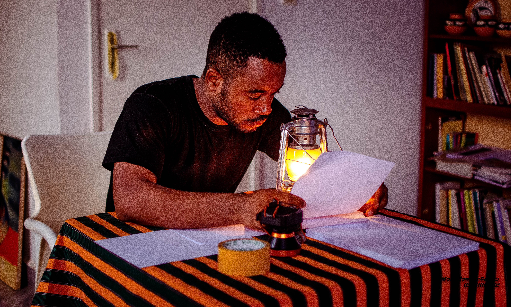

JF
Home
Description
Contact
ETUDAVI
Description
Etudavi
Le spectacle « ETUDAVIE » porte sur l’aliénation que la société a quant à penser que la réussite sociale passe impérativement par une longue éducation scolaire ( l’école est la seule source de réussite) Il s’agit dans ce spectacle de montrer non seulement que l’art est un moyen substantiel de réussir de par nos différences culturelles que nous pouvons exploiter mais aussi de prouver par le billet de la danse que l’école bien qu’ elle soit la méthode la plus adaptée de réussite ne nous conduit pas toujours à bon port. Au-delà même de notre espérance les efforts que nous fournissons se voient quelques fois couronnées d’échecs scolaires et nous passons à côté des meilleures qualifications dont nous disposons et que nous aurions pu utiliser à bon escient. Cette nouvelle création du chorégraphe est une opportunité de donner espoir aux jeunes étudiants sans et avec diplômes qui ne savent pas vers qui s’orienter lorsqu’ ils ont une passion qu’ils ne parviennent pas à faire valoir.
Cette création ne s’adresse pas juste à une catégorie de personnes mais à toutes celles qui ont eu peur d’oser se lancer d’entreprendre et toutes celles-là qui ont craint de faire valoir leur potentiel artistique. ETUDAVIE est un projet de spectacle hiphop contemporain qui s’adapte à des espaces de nature différente : scène de théâtre, scène circulaire, friche, parc… ce spectacle unique en son genre fait état durant son déroulent d’une suite d’expositions d’œuvre d’art plastique et/ou numérique selon le lieu de sa présentation et vous fera prendre conscience des potentialités dont vous disposez et que vous pouvez à tout moment faire valoir car dit-on souvent « il n’est jamais trop tard pour faire valoir son talent ».
Extrait Du projet
  
Avez Vous Un Projet En Tête?
Contacter Moi
DZOU LUC FRANÇOIS
Email : dzoulucf@gmail.com
Tel : +237698236172